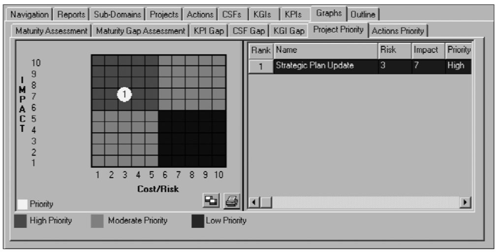
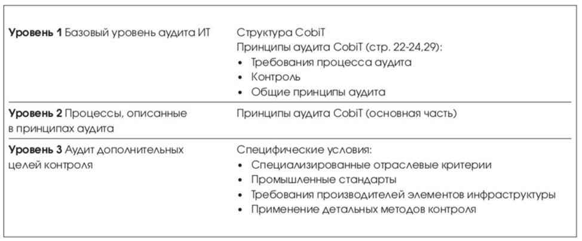

Аудит ИТ
Принципы аудита CobiT – книга стандарта, которая в большей степени ориентирована на аудит ИТ-процессов, чем на аудит конкретных функций или приложений. CobiT состоит из высокоуровневых целей контроля (определенных для ИТ-процессов организации), которые охватывают все параметры информационных систем и применяемых информационных технологий, учитывают цикл жизни и специфические задачи, решаемые ИТ.
CobiT Advisor 3rd Edition (Audit)
Цель написания программного продукта «CobiT Advisor» – максимально облегчить проведение аудита ИТ. Основываясь на открытом стандарте CobiT, программа Advisor обновляется в соответствии с редакциями стандарта. На основании изменений и дополнений третьего издания стандарта CobiT в «CobiT Advisor» были внесены соответствующие изменения. Программный продукт был дополнен 16 новыми объектами контроля и новыми формами отчетов. «CobiT Advisor» представляет собой базу данных Foxpro, структурированную в соответствии с 34 процессами и 318 объектами контроля стандарта CobiT, которая позволяет хранить, обрабатывать и предоставлять информацию о результатах проведения аудита в форме отчетов в различных форматах (например, MS Word, Excel).

Одним из типовых отчетов являются модели зрелости, которые можно построить как для каждого процесса управления ИТ, так и для совокупной модели зрелости всех ИТ-сервисов организации.
Структура принципов аудита CobiT
Для каждого ИТ-процесса, определенного CobiT, в Принципах аудита представлена следующая информация.
Секция высокого уровня принципов аудита CobiT отражает:
- – Название бизнес-процесса;
- – Требования бизнеса (Объекты контроля высокого уровня);
- – Как осуществлять контроль;
- – Что учитывать.
Для перехода на уровень детального аудита ИТ-процесса:
- – Детальные объекты контроля;
- – Как понять ИТ-процесс (кому задавать вопросы);
- – Как оценить контроль ИТ-процесса;
- – Как оценить соответствие этого контроля – управлению;
- – Как доказать риск не выполнения целей управления.
На практике при проведении аудита для каждого ИТ-процесса ИТ-аудитору, как минимум необходимо выполнить следующую работу:
- Определить высокоуровневый объект контроля;
- Определить ИТ-процесс;
- Проанализировать границы аудита;
- Определить детальные объекты контроля;
- Провести интервью с сотрудниками (ориентировочные названия должностей для каждого объекта контроля приведены в принципах управления);
- Назначить задания на оценку средств контроля (Принято ли во внимание ...);
- Оценить соответствие;
- Проверить доказательства.
